<!--
@license
Copyright (c) 2016 The Polymer Project Authors. All rights reserved.
This code may only be used under the BSD style license found at http://polymer.github.io/LICENSE.txt
The complete set of authors may be found at http://polymer.github.io/AUTHORS.txt
The complete set of contributors may be found at http://polymer.github.io/CONTRIBUTORS.txt
Code distributed by Google as part of the polymer project is also
subject to an additional IP rights grant found at http://polymer.github.io/PATENTS.txt
-->

<link rel="import" href="../bower_components/polymer/polymer.html">
<link rel="import" href="../bower_components/paper-button/paper-button.html">
<link rel="import" href="shared-styles.html">

<dom-module id="page-kandang">
  <template>
    <style include="shared-styles">
      :host {
        display: block;
      }

      paper-button.brown{
        width: calc(100% - 10px);
      }

      paper-button.brown iron-icon{
        margin-right: 10px;
        --iron-icon-width: 32px;
        --iron-icon-height: 32px;
        --iron-icon-fill-color: #3377BB;
      }
    </style>
    <paper-header-panel class="custom header" mode="scroll">
      <paper-toolbar>
        <div id="main-title"><center></center><a><iron-icon icon="my-icons:bell"></iron-icon></a></div>
      </paper-toolbar>
        <paper-button raised class="custom brown"><span>206</span>Jumlah hewan dijual</paper-button>
        <paper-button raised class="custom brown"><span>5</span>Hewan terjual</paper-button>
        <paper-button raised class="custom brown"><iron-icon icon="add-circle"></iron-icon></div>Tambah hewan</paper-button>
      </paper-header-panel>
  </template>

  <script>
    Polymer({
      is: 'page-kandang',
    });
  </script>
</dom-module>
